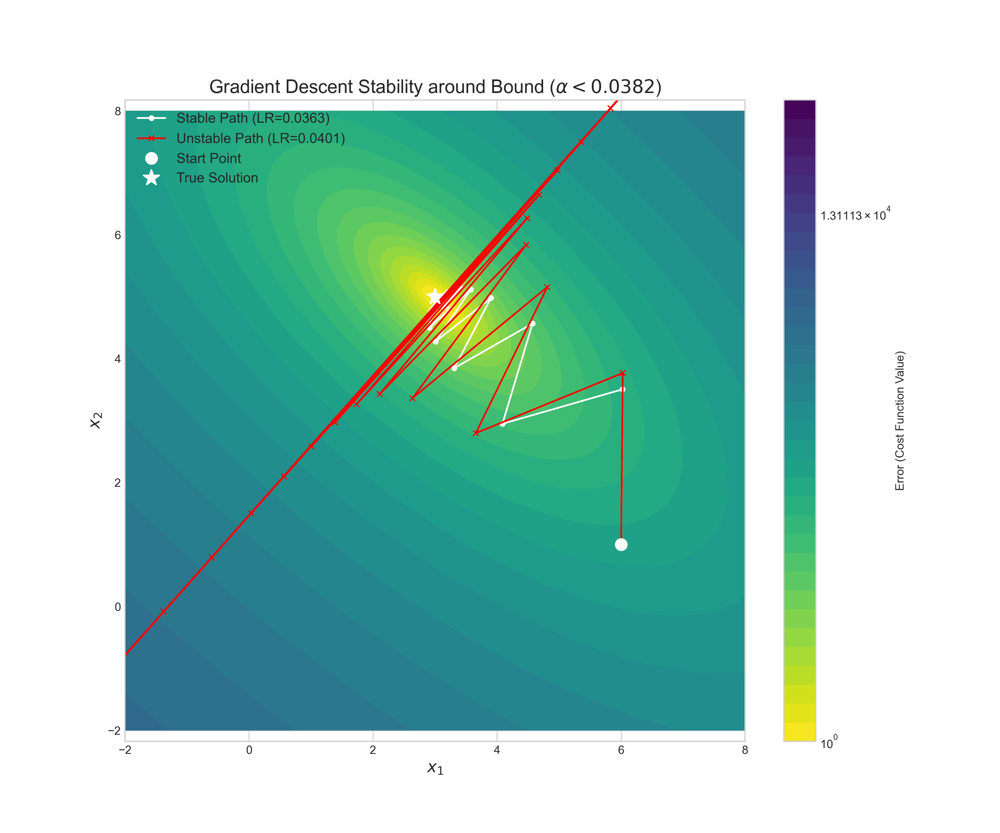
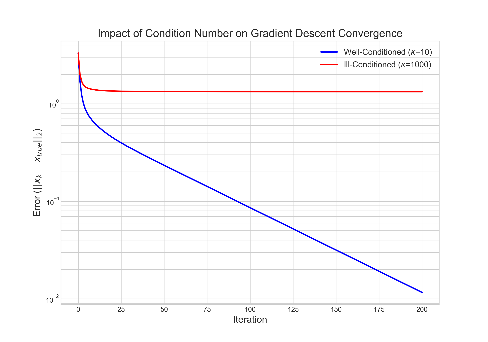
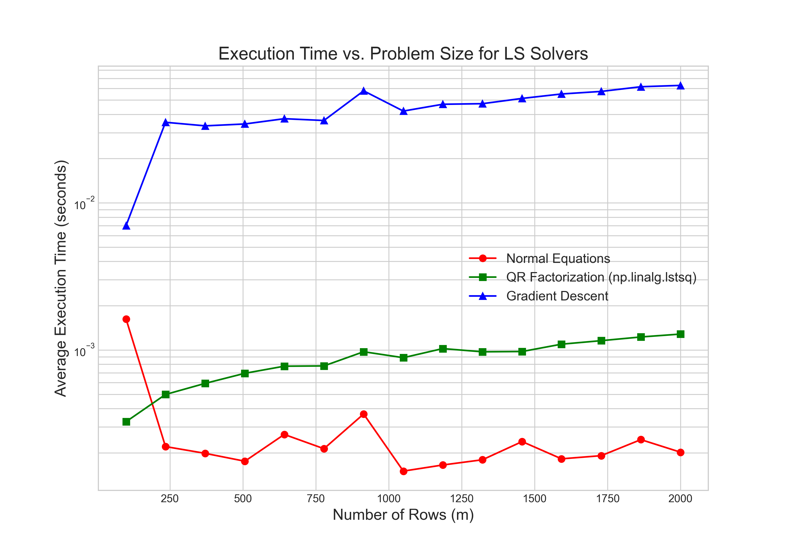

In this series, we have focused on direct methods like LU, QR, and the SVD, which solve linear systems in a finite number of steps. These factorization-based techniques are powerful, but their computational cost makes them impractical for the very large-scale problems that arise in fields like modern machine learning. When faced with matrices so large that factorization is not feasible, we must shift our strategy from direct construction to iterative refinement. This approach begins with an initial guess and systematically improves it, searching for a solution rather than calculating it all at once.
To guide this search effectively, we need a way to determine the direction of improvement at each step. This is where optimization, powered by the tools of matrix calculus, becomes essential. While the theoretical foundations of matrix calculus were established in our previous series, this article will focus on its computational application. We will use the gradient—the vector of partial derivatives—to find the direction of steepest descent in our error function, providing a clear path toward the optimal solution.
Our exploration will proceed in three stages. First, we will apply the rules of matrix calculus to derive the gradient for the least squares objective function. Next, we will implement the foundational Gradient Descent algorithm from scratch, examining the critical parameters that govern its behavior. Finally, we will analyze its performance and convergence, benchmarking it against the direct methods to understand the trade-offs between these two competing computational philosophies.
The Gradient of the Least Squares Objective
Our starting point is the familiar objective function for the least squares problem, which seeks to minimize the squared Euclidean norm of the residual vector $\mathbf{r} = \mathbf{A}\mathbf{x} - \mathbf{b}$. We can think of this function, $f(\mathbf{x})$, as defining a high-dimensional error landscape; for any given vector of parameters $\mathbf{x}$, $f(\mathbf{x})$ gives the corresponding error value. Our goal is to find the specific coordinates $\mathbf{x}$ that correspond to the lowest point in this landscape.
To navigate this landscape, we need the gradient, $\nabla f(\mathbf{x})$, which is the vector of partial derivatives of $f$ with respect to each element of $\mathbf{x}$. The gradient always points in the direction of the steepest local ascent. To find the minimum, we must therefore take steps in the direction of the negative gradient. The first step is to derive a clean expression for this gradient.
The derivation begins by rewriting the objective function using the definition of the squared norm, $\|\mathbf{v}\|_2^2 = \mathbf{v}^T\mathbf{v}$:
Expanding this expression gives:
Since the term $\mathbf{b}^T\mathbf{A}\mathbf{x}$ is a scalar, it is equal to its own transpose, $(\mathbf{b}^T\mathbf{A}\mathbf{x})^T = \mathbf{x}^T\mathbf{A}^T\mathbf{b}$. This allows us to combine the two middle terms:
Now, we can differentiate this expression term-by-term with respect to the vector $\mathbf{x}$. Recalling the key identities for vector derivatives—specifically, that the gradient of a quadratic form $\mathbf{x}^T\mathbf{B}\mathbf{x}$ is $2\mathbf{B}\mathbf{x}$ for a symmetric matrix $\mathbf{B}$, and the gradient of a linear term $\mathbf{c}^T\mathbf{x}$ is simply $\mathbf{c}$—we can proceed. The matrix $\mathbf{A}^T\mathbf{A}$ is symmetric, and the term $\mathbf{b}^T\mathbf{b}$ is a constant with respect to $\mathbf{x}$, so its derivative is zero.
Applying these rules, we find the gradient:
This gives us the final, elegant expression for the gradient:
This result provides a critical insight. At the minimum of the error landscape, the gradient must be equal to the zero vector. If we set $\nabla f(\mathbf{x}) = \mathbf{0}$, we arrive at $2(\mathbf{A}^T\mathbf{A}\mathbf{x} - \mathbf{A}^T\mathbf{b}) = \mathbf{0}$, which simplifies to $\mathbf{A}^T\mathbf{A}\mathbf{x} = \mathbf{A}^T\mathbf{b}$. This is precisely the Normal Equations, which we derived from a geometric perspective in a previous article. This confirms that the calculus-based optimization approach and the direct algebraic approach are fundamentally aimed at the same solution. With this gradient, we now have the tool we need to build our iterative solver.
The Gradient Descent Algorithm
Armed with the gradient, we can now formally define the Gradient Descent algorithm. It is an iterative method that operationalizes our search for the minimum of the error landscape. The process begins with an initial guess for the solution vector, $\mathbf{x}_0$, which is often a vector of zeros or small random numbers. From this starting point, the algorithm repeatedly updates the solution by taking a step in the direction of the negative gradient. This core update rule is the heart of the algorithm:
Here, $\mathbf{x}_k$ is the current estimate of the solution, and $\nabla f(\mathbf{x}_k)$ is the gradient calculated at that point. The scalar $\alpha$ is the learning rate, a critical parameter that controls the size of each step taken down the error landscape. The effectiveness of this process hinges on the careful selection of its parameters.
A Deeper Analysis of the Learning Rate
The learning rate is not a universal constant; it is intrinsically tied to the geometry of the specific problem being solved. The stability and convergence rate of gradient descent depend on the curvature of the error landscape. For the least squares problem, this curvature is described by the Hessian matrix, which is the matrix of second partial derivatives, $\mathbf{H} = \nabla^2 f(\mathbf{x})$. For our objective function, the Hessian is constant everywhere and is given by $\mathbf{H} = 2\mathbf{A}^T\mathbf{A}$.
The eigenvalues and eigenvectors of this Hessian matrix fully characterize the shape of the error landscape. The eigenvectors of $\mathbf{H}$ point along the principal axes of the elliptical contour lines of the error surface, and the corresponding eigenvalues dictate the curvature, or steepness, along those axes. A large eigenvalue signifies a direction of high curvature (a steep wall of the error valley), while a small eigenvalue signifies low curvature (a flat valley floor). This geometric insight is key to understanding the stability of the algorithm.
A formal stability analysis reveals the precise relationship between the maximum curvature and the learning rate. Let $\mathbf{x}^*$ be the true solution where the gradient is zero. The error at any step $k$ is the vector $\mathbf{e}_k = \mathbf{x}_k - \mathbf{x}^*$. We can express the error at the next step, $\mathbf{e}_{k+1}$, in terms of the current error:
We can rewrite the gradient in terms of the error, noting that $\nabla f(\mathbf{x}^*) = \mathbf{0}$: $\nabla f(\mathbf{x}_k) = \nabla f(\mathbf{x}_k) - \nabla f(\mathbf{x}^*) \approx \mathbf{H}(\mathbf{x}_k - \mathbf{x}^*) = \mathbf{H}\mathbf{e}_k$. This approximation is exact for our quadratic objective function. Substituting this into the error update gives:
This equation shows that the error vector at each step is multiplied by the matrix $(\mathbf{I} - \alpha\mathbf{H})$. For the error to shrink and the algorithm to converge, the magnitude of this transformation must be less than one. This requires that the spectral radius of the matrix $(\mathbf{I} - \alpha\mathbf{H})$ be less than 1. The eigenvalues of this matrix are $(1 - \alpha\lambda_i)$, where $\lambda_i$ are the eigenvalues of $\mathbf{H}$. Therefore, we must satisfy $|1 - \alpha\lambda_i| < 1$ for all eigenvalues $\lambda_i$. This inequality leads to the condition $\alpha < 2/\lambda_i$. To ensure this holds for all directions of curvature, we must satisfy it for the largest eigenvalue, which corresponds to the steepest direction:
This result is definitive. The maximum stable learning rate is dictated by the maximum curvature of the error landscape. A problem with a very steep surface (a large $\lambda_{\text{max}}$) requires a smaller learning rate to maintain stability. This explains why no single learning rate works for all problems and why heuristics or adaptive methods are often necessary in practice, as computing $\lambda_{\text{max}}$ directly can be prohibitively expensive.
The practical consequences of this stability bound are demonstrated in Figure 1. The visualization shows two attempts to solve the same problem, governed by a theoretical stability bound of $\alpha < 0.0382$.

The first path uses a learning rate of $\alpha = 0.0363$, which is safely within the bound. As a result, it proceeds directly and smoothly toward the true solution, demonstrating stable convergence. The second path uses a learning rate of $\alpha = 0.0401$, which is just slightly above the critical threshold. The result is immediate and catastrophic divergence. The solution takes a few steps and then is thrown completely off the landscape, with its error rapidly increasing. This provides a stark visual confirmation of the stability analysis: even a minor violation of the learning rate condition can lead to complete failure.
Stopping Criteria
Just as important as the learning rate is the stopping criterion. An iterative algorithm must know when to terminate. The simplest approach is to run for a fixed number of iterations, which serves as a necessary safeguard against an infinite loop. However, more robust methods monitor the state of the convergence. One such method is to track the change in the solution itself, stopping when the distance between consecutive estimates, $\|\mathbf{x}_{k+1} - \mathbf{x}_k\|_2$, falls below a small tolerance. This indicates that the algorithm is no longer making significant progress. Perhaps the most principled approach is to monitor the norm of the gradient, $\|\nabla f(\mathbf{x}_k)\|_2$. Since the gradient is zero at the exact minimum, a very small gradient norm indicates that the algorithm has reached a flat region of the landscape and is very close to the optimal solution. A combination of both might be used to ensure more robust convergence.
Analysis and Benchmarking
Having established the mechanics of gradient descent, we now turn to a critical analysis of its performance. The algorithm's efficiency is not constant; it is deeply influenced by the characteristics of the problem it is trying to solve. In a previous article, we introduced the condition number as a measure of a problem's sensitivity for direct methods. Here, we will see that it plays an equally crucial role in governing the convergence rate of iterative methods.
The convergence rate is dictated by the worst-case error reduction, which we want to minimize by choosing the best learning rate $\alpha$. This worst case is always determined by the error components corresponding to smallest and largest eigenvalues of the Hessian, $\lambda_{\text{min}}$ and $\lambda_{\text{max}}$.
The optimal strategy is to select an $\alpha$ that perfectly balances the error reduction for these two extremes. This is achieved by setting their reduction factors equal: $|1-\alpha\lambda_{\text{min}}| = |1 - \alpha\lambda_{\text{max}}|$. This choice is optimal because if the factors were unequal, the larger one would limit the overall convergence speed, and we could always adjust $\alpha$ to improve it. This potential for improvement is only exhausted when they are equal. Solving this equation for $\alpha$ yields the optimal learning rate:
Substituting this optimal $\alpha$ back into the expression for the reduction factor at the boundaries gives the best possible worst-case convergence rate. At $\lambda_{\text{min}}$, the factor is:
This factor can be expressed in terms of the condition number of the Hessian, $\kappa = \lambda_{\text{max}}/\lambda_{\text{min}}$, by dividing the numerator and denominator by $\lambda_{\text{min}}$:
This expression formally quantifies the convergence rate. For a well-conditioned problem where $\kappa$ is small (close to 1), this factor is small, and the algorithm converges rapidly. For an ill-conditioned problem where $\kappa$ is large, this factor is close to 1, leading to extremely slow convergence.
This mathematical reality has a clear geometric interpretation. An ill-conditioned problem corresponds to an error landscape with long, narrow, elliptical valleys. The gradient, which is always perpendicular to the contour lines, does not point directly toward the minimum. As a result, the algorithm is forced to take many small, zig-zagging steps to navigate the valley, as shown in Figure 2.

This experiment provides a powerful visual confirmation of the theory. For the well-conditioned problem, the error decreases linearly and rapidly on the logarithmic scale. For the ill-conditioned problem, the error also decreases linearly, but at a dramatically slower rate. After 200 iterations, the well-conditioned problem has nearly converged, while the ill-conditioned problem has barely improved from its starting point. This highlights a fundamental weakness of the basic gradient descent algorithm: its performance degrades severely on the very problems that are often of practical interest.
Before comparing the empirical timing results, it is important to analyze the computational complexity of gradient descent. The primary workload in each iteration is the calculation of the gradient, $\nabla f(\mathbf{x}) = 2\mathbf{A}^T(\mathbf{A}\mathbf{x} - \mathbf{b})$. This involves a matrix-vector product, $\mathbf{A}\mathbf{x}$, which costs $O(mn)$ operations for an $m \times n$ matrix $\mathbf{A}$, followed by a vector subtraction, and then a matrix-transpose-vector product, $\mathbf{A}^T\mathbf{r}$, which also costs $O(mn)$ operations. Therefore, the cost of a single iteration is $O(mn)$. If the algorithm requires $N_{\text{iter}}$ iterations to converge, the total computational cost is $O(N_{\text{iter}} \cdot mn)$. This contrasts sharply with direct methods, whose cost does not depend on an unknown number of iterations.
Finally, we compare the computational cost of gradient descent against the direct methods from a previous article. For this benchmark, we compare the total time required to find a solution for problems of increasing size. The results, shown in Figure 3, reveal the fundamental trade-off between the two approaches.

The direct methods, while having a higher theoretical complexity per step ($O(mn^2)$ for QR), are orders of magnitude faster for small and medium-sized matrices. This is because the cost of the factorization is a one-time, upfront expense that is heavily optimized in libraries like LAPACK. In contrast, gradient descent's lower cost per iteration is offset by the potentially huge number of iterations required for convergence, especially for ill-conditioned problems. For the problem sizes tested here, the total time for the numerous iterations far exceeds the time for the single, direct factorization. This leads to a clear conclusion: for the standard, dense least squares problems that can fit in memory, direct methods are unequivocally superior in both speed and accuracy. The true power of iterative methods like gradient descent is realized only at a massive scale where factorizations are no longer possible.
Conclusion
In this article, we pivoted from the world of direct, exact solvers to the iterative paradigm of optimization. By applying the principles of matrix calculus, we derived the gradient of the least squares objective function and used it to build the foundational gradient descent algorithm. Our analysis revealed the algorithm's deep sensitivity to its parameters and the underlying geometry of the problem. We saw that the learning rate is not an arbitrary choice but is strictly bounded by the maximum curvature of the error landscape, and that the algorithm's convergence speed is governed by the problem's condition number.
For standard, dense problems, the high upfront cost of a direct factorization is a far better investment than the cumulative cost of many "cheap" gradient descent iterations. However, this conclusion should not be seen as a disregard of gradient-based methods. Rather, it highlights that gradient descent is not an all-purpose replacement for factorization, but a different tool for a different class of problem. Its true value emerges at scales where direct methods fail, and it serves as the conceptual bedrock for the more sophisticated iterative algorithms that are essential for solving the large-scale systems at the heart of modern computational science.